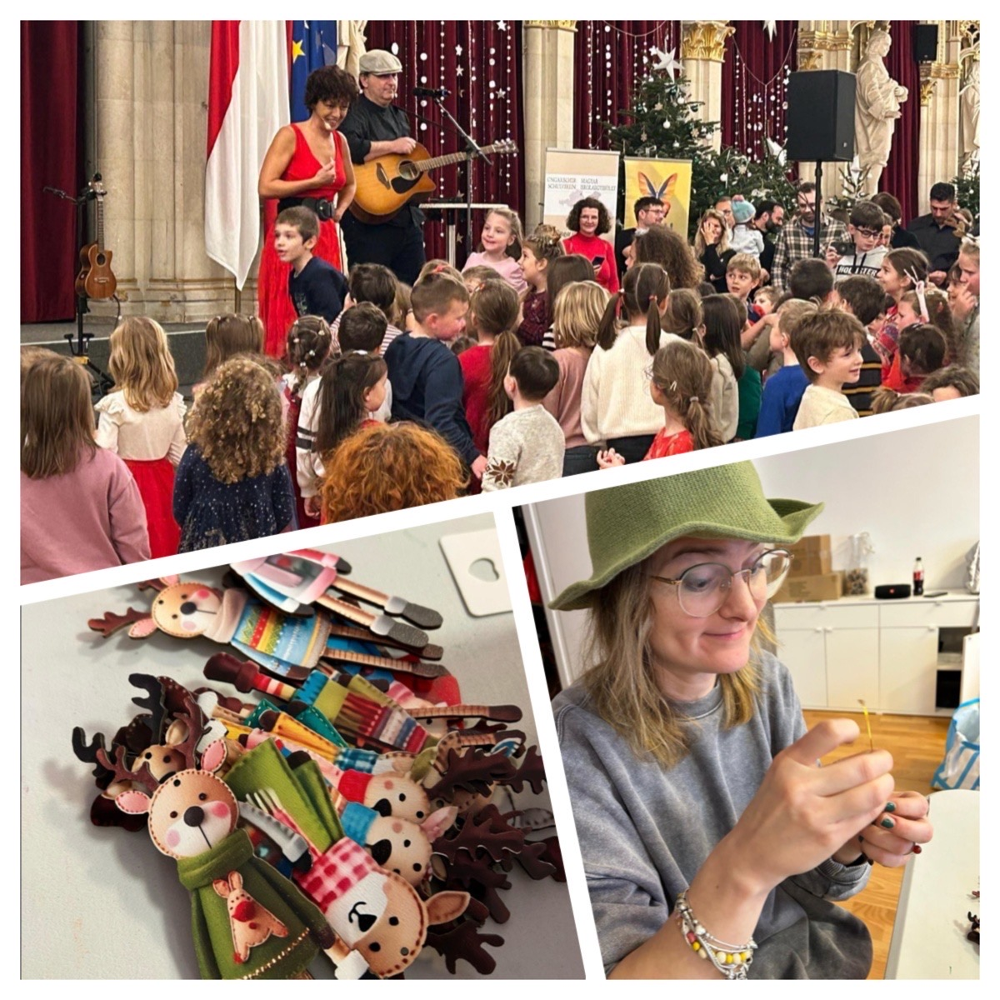

LOOKING BACK
How we prepared for Santa last year – behind the scenes
A glimpse behind the scenes: months of planning, unexpected twists, last-minute solutions – and the moment the children arrive and everything falls into place.
Every October, we begin preparing for Santa's arrival. We plan everything carefully, step by step. We coordinate with the venue and thoughtfully choose what goes into the little gift bags for the children. Buying and wrapping the gifts usually takes a whole day. Then, as always, something goes wrong. There aren't enough bags, or some of the chocolate Santas break. We have to replace them. Then the big day arrives. We set off from the school towards the Rathaus with huge packages and all our supplies. As we unpack, we discover that one essential, irreplaceable item has been left at school. Now you're racing against time: you head back to school, stay on the phone with the other organisers, keep checking the time, and make sure you don't cross at a red light.
You return to the venue. Everything is there. Except Santa, even though you could swear you saw him in the building. You search frantically, ask everyone else to look, and eventually he turns up. You quickly go over his role with him. Not that he doesn't know what to do, but you like to be certain.
You catch your breath for a moment. You realise you're thirsty because you haven't had anything to drink all day. But you haven't brought water for the performers either. You forgot to buy it, and there's no time to go out now. You call your friend, ask where she is, and beg her to stop at a shop immediately for some small bottles of water.
The children arrive, and suddenly everything falls into place. The grand chandeliers sparkle and shine. This beautiful hall fills with a cheerful buzz, and you feel that everything is finally just right.
We would love to see you again at the Hungarian Santa celebration in Vienna! Join us on 3 December and celebrate with us!
